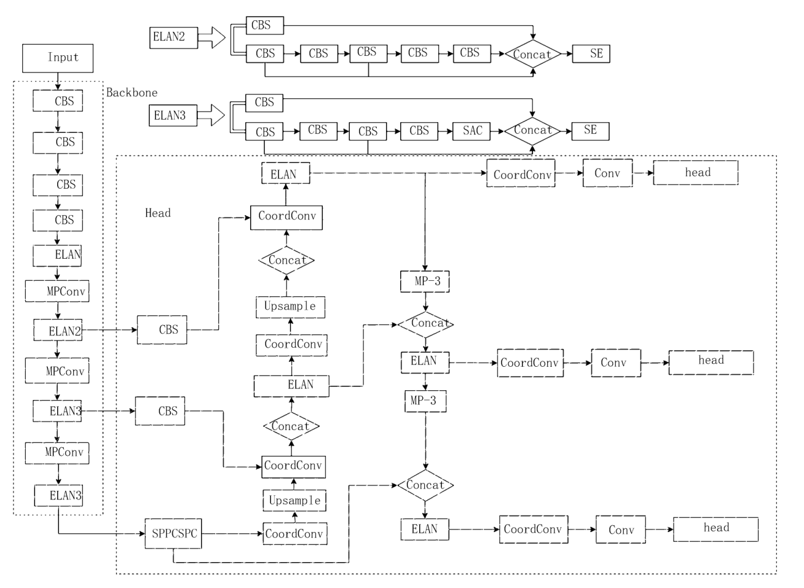
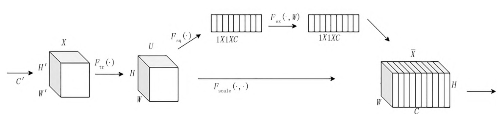
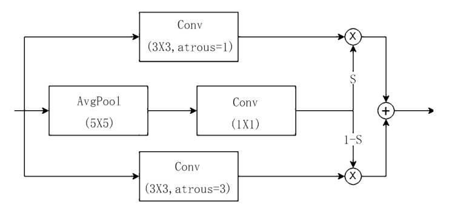
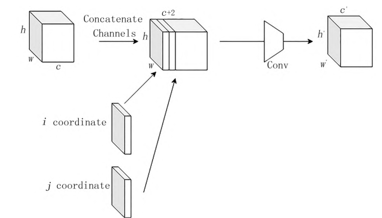
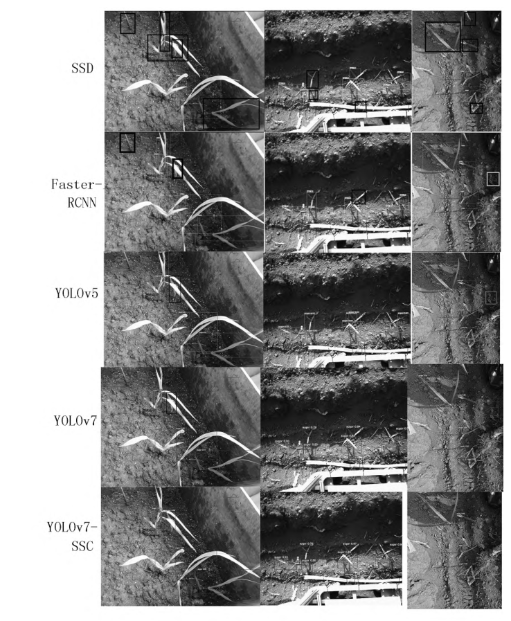
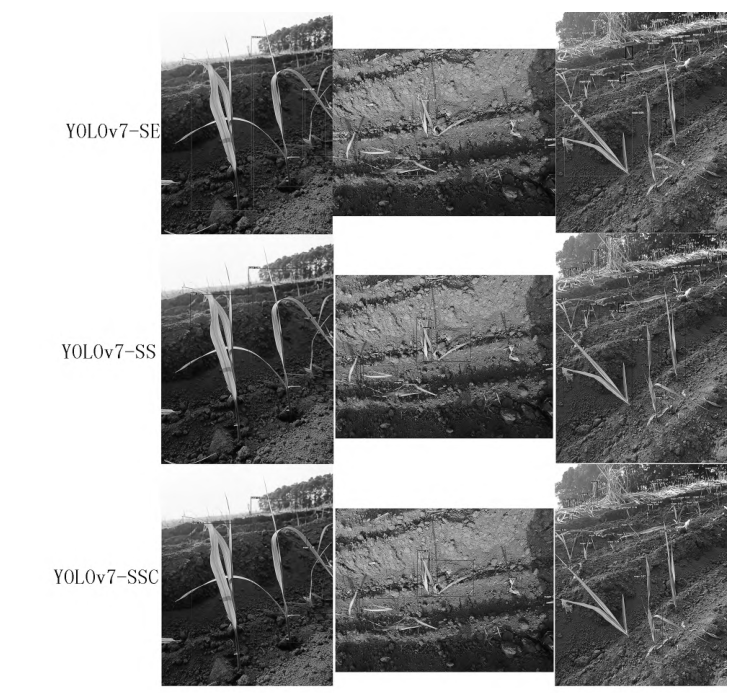

YOLOv7-SSC：注入 SE 注意力与可切换空洞卷积 SAConv 增强特征提取，引入 CoordConv 提升位置感知，通道剪枝实现轻量化，mAP 达 94.4%。
在 backbone 的 ELAN 分支中引入 SE，通过通道级权重重标定加强通道特征，缓解幼苗大小不一导致的漏检。
在 ELAN3 分支中以 SAConv 替换普通卷积，对不同空间采样率的卷积结果做开关聚合，增强位置特征感知。
在 head 中插入 CoordConv，将坐标信息编码进特征图，提高对蔗苗位置与多尺度目标的检测能力。
基于重要性度量的通道剪枝，推理速度提高 6.33 帧/s、模型减小 23.1 MB，最终 mAP 94.4%、FPS 8.79。

s = σ(W2 δ(W1 z))
σ 为 sigmoid，δ 为 ReLU，z 为压缩后的通道统计量。

S(x) · Conv(x,w,1) + [1−S(x)] · Conv(x,w+Δw,r)



P 91.1% / mAP 93.0%
P 92.2% / mAP 93.2%
P 94.8% / mAP 93.1%
P 95.1% / mAP 94.4%
剪枝后推理速度提高 6.33 帧/s、模型减小 23.1 MB，mAP 92.6%、FPS 8.79，以少量精度为代价换来可用的推理速度。

在 backbone ELAN 中引入 SE，以极小计算开销重标定通道权重，为田间小目标检测特征增强提供参考。
在特征提取层与融合层分别组合可切换空洞卷积和坐标编码，消融实验中各模块增益归属清晰。
以通道重要性度量剪枝配合二次微调，推理速度提升到 8.79 帧/s 并压缩到 53.8 MB，兼顾精度与部署。